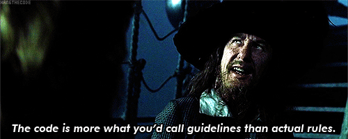

Eva is a Java OOP implementation of an evolutionary algorithm,
which is a concept from the field of artifical intelligence. It can
help find solutions to complicated problems that otherwise would require very
much computational effort to be solved.
Examples of problems that can be solved:
- The backpack problem [wiki]
- The salesman's problem [wiki]
- ... and really any other problem for which you can
formalize the solution, solution generation and solution
evaluation,
in such a way that Eva can understand (see Usage page).
How does it work?
First, a number of possible solutions are generated and evaluated (evaluating a solution means saying how good, or how "fit" it is).
Based on these solutions, with each iteration, it tries to create better solutions by changing and combining the existing ones until finally, a solution is chosen to be the answer.
The algorithm runs until certain conditions are met, like:
- number of iterations (implicit)
- time consumed
- a solution with a minimal "fitness" was found etc.
Wait, what?
From the simplicity of the above paragraph, you might have guessed that Eva is a heuristic, rather than an algorithm. It's called an agorithm in AI, because
it tries to follow the evolving steps of living organisms (if you dig deeper in the theory, you will find words like "chromosome", or "mutation").

In other words, run it with the same input multiple times and you most likely won't get the same output. Also, based on the conditions you set,
you might get a very satisfying solution, or one that is very bad.
Having this in sight, you must know not to use this method where both precision and speed are required.
Depending on your problem, you might guarantee a satisfying result by specifying appropriate stopping conditions, but that takes
away the speed. For a big input and strict conditions, it can take a lot of time for the algorithm to end - this is influenced also by the machine's specifications, of course.
Maven dependency
The framework comes as a lightweight maven dependency. To start using it,
simply add this dependency into your pom.xml:
Needed implementations:
Eva expects concrete implementations of a few abstractions that are used. Things that can't come out-of-the-box (they are specific to each problem)
- A
Representation for a Solution. How does a solution to your problem look like?
- Define what a solution's
Fitness is and how it's calculated.
- How does a solution
mutate (change its representation) and how do 2 solutions create another.
Be creative here and try to predict the behaviour of a solution. This part is actually the engine of everything and
can make a big difference in the performance of the algorithm!
- How is a
Solution created? The algorithm starts off by creating a number of solutions
to work with, so you need to provide a generator of solutions.
Example implementations
Look in the package com.amihaiemil.eva.ex to find example implementations that can be used in solving the
backpack's problem. Also, taking a look in the unit tests will surely help you get a good grip of how to
use this library.
Releases history
You can find on this page the list of all releases joined by a sumary of changes in each release. If you're a maven user, you can obtain the latest release by putting the following snippet in your pom.xml:
| Version (jar with dependencies) |
Release date |
Summary of changes |
| 1.0.0 |
15.04.2016 |
initial version |
Licence
The EvA project is free and open source, released under The BSD 3-Clause Licence. See LICENCE file for details.
Open source @ Github:
If you wish to contribute to this project:
- Open an issue regarding an improvement you thought of, or
a bug you noticed.
- If the issue is confirmed, fork the repository, do the changes and make a Pull Request.
- After review and acceptance, the PR is merged and closed.
- You are automatically listed as a contributor.

Contributors:
The list of contributors can be found
here
|
Github username |
Contributions |